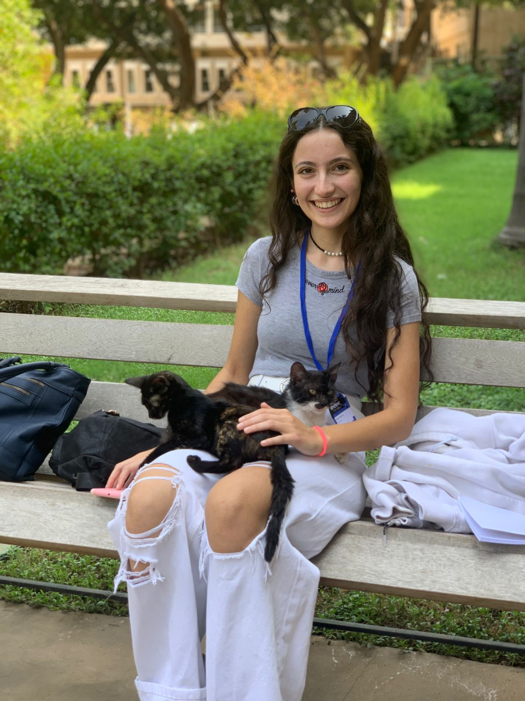

AI & Computer Vision
🩸 White Blood Cell Classification
A convolutional neural network trained on microscopy images to classify white blood cell subtypes, built for a Kaggle medical imaging challenge.
View project →I'm currently pursuing a double degree between Télécom Paris and ESIB in Beirut, where I explore artificial intelligence, computer graphics, virtual reality, and human-computer interaction.
I love creating things that make people smile.
Whether it's through technology, volunteering, sketching, or discovering a beautiful place, I'm happiest when creativity meets human connection — that's what drew me to computer graphics and human-computer interaction, where I get to combine aesthetics, technology, and people.

💻 Projects
AI & Computer Vision
A convolutional neural network trained on microscopy images to classify white blood cell subtypes, built for a Kaggle medical imaging challenge.
View project →
AI & Computer Vision
Four approaches compared side by side — hand-crafted features, CNN transfer learning, CLIP, and DINOv2 — reaching 97% balanced accuracy on 8,100 paintings.
View project →
XR & Human-Computer Interaction
A Unity / OpenXR Lebanese-themed VR puzzle game where one calibrated physical board is reused as different virtual objects, with adaptive gain reaching targets at any depth.
View project →
XR & Human-Computer Interaction
A human-centered Android app shaped by user research and rapid prototyping, designed to help people build meaningful in-person connections.
View project →
Computer Graphics
A full 3D rendering pipeline built from first principles — Laplacian mesh smoothing, ray tracing, and shadow mapping working together end to end.
View project →
Computer Graphics
A real-time 3D solar system built with raw OpenGL and GLSL shaders, featuring Phong lighting and texture-mapped planetary bodies.
View project →
Mobile Development & AI
An intelligent wardrobe manager built with Kotlin and Supabase, integrating machine-learning models for clothing analysis, color detection and outfit recommendations.
View project →❤️ Community
Most of what I've learned about designing for people, I learned outside a classroom by showing up for my community
Mmkn NGO — Beirut, Lebanon
2022 – 2025
Started as a volunteer tutor in Math and Physics for grades 8–9 at Mmkn, an organization providing educational support to underprivileged students. Was later promoted to Program Coordinator, supervising tutoring sessions and producing weekly reports.
Offre Joie NGO — Beirut, Lebanon
Jun – Sep 2024
Helped rebuild the Mar Mikhael neighborhood, damaged in the Beirut port explosion, with a humanitarian organization focused on post-crisis reconstruction and social solidarity.
Google Developer Student Club
2023 – 2025
Organized meetings, technical conferences, and club events with a multidisciplinary student board, and worked collaboratively across teams to plan and deliver each one.
Lebanese Center for the Deaf (LCD)
Nov 2023 – Mar 2024
Took a sign language course alongside deaf individuals — learning to communicate on their terms rather than asking them to adapt to mine.
Outside the classroom
I read fiction because I love dreaming and escaping into other worlds.
I enjoy drawing in all the colors that i want without restrictions to fit into "beauty", it feels like freedom
I LOVE writing and journaling to stay connected to myself, my thoughts, and how I feel.
Is there anything better than a weekend in another city with the people we love? Memories' Gallery below.
Texas A&M University — Qatar
May – Jun 2024
Two weeks in Doha going deep on neural networks, optimization methods, AI ethics, and applications of AI in medicine and cybersecurity, through hands-on project sessions.
RESCIF Network — Francophone Engineering Schools
Jul 2023
Won 1st prize at the RESCIF Entrepreneurs' Competition for SHiEld — led problem definition, prototyping, and a full business model canvas with mentoring from industry professionals.
Some of my favorite moments with my favorite people!